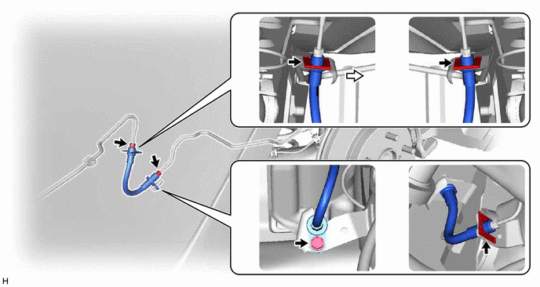

RM3140CG
_54
制动
_023993
制动器（后轮）
_0116088
后轮制动器挠性软管
A
制动器（后轮） 后轮制动器挠性软管 安装
注意/小心/提示
- 备注：
- ·
由于左侧和右侧后挠性软管和后制动管挠性软管不能互换，因此在安装后挠性软管和后制动管挠性软管时需确认零件号。
·如果要重新使用后挠性软管和后制动管挠性软管，则检查断开各软管时所做的识别标记后，连接软管。
程序

 1.安装后制动管挠性软管
1.安装后制动管挠性软管
- 备注：
-
安装后制动管挠性软管时使挠性软管扭曲最小。

4.219,1.208 5.042,1.208
true
3.208,0.26 3.521,0.417
0.313,0.156
10
*A
5.167,0.271 5.479,0.427
0.313,0.156
10
*B
5.083,1.125 5.396,1.281
0.313,0.156
10
*a
3.135,2.292 3.448,2.448
0.313,0.156
10
*A
5.156,2.229 5.469,2.385
0.313,0.156
10
*B
| *A | 左侧 | *B | 右侧 |
| *a | 识别标记 | - | - |

|
车辆内部 | - | - |
a.
左侧：
i.
用螺栓和新卡子安装后制动管挠性软管。
- 扭矩：
- 19 N*m (194 kgf*cm, 14 ft.*lbf)
- 备注：
- ·
安装卡子至最紧位置。
·安装后制动管挠性软管时，使识别标记朝向车辆内侧。
b.
右侧：
i.
用 2 个新卡子安装后制动管挠性软管。
- 备注：
-
安装卡子至最紧位置。
c.
使用连接螺母扳手，将 2 个制动管路连接到后制动管挠性软管上。
- 扭矩：
- 15.2 N*m (155 kgf*cm, 11 ft.*lbf)
- 备注：
- ·
不要扭曲或损坏制动管路。
·不要让任何异物（如污物或灰尘）从连接部位进入制动管路。
·利用公式计算连接螺母扳手和扭矩扳手配合使用时的特定扭矩值。
单击此处 概述>导言>维修说明>注意事项201406,999999,_V1,_023977,_0116736,RM100000000DB82,
2.安装后挠性软管
- 提示：
- ·
右侧操作程序与左侧相同。
·下面程序适用于左侧。
a.
用新接头螺栓和新衬垫将后挠性软管连接到后盘式制动器制动缸总成上。
- 扭矩：
- 29 N*m (296 kgf*cm, 21 ft.*lbf)
- 备注：
-
将后挠性软管锁止器牢固地安装到后盘式制动器制动缸总成的锁孔中。
b.
安装新卡子。
- 备注：
- ·
安装卡子至最紧位置。
·安装后挠性软管时使挠性软管扭曲最小。
c.
用扳手固定后挠性软管的同时，用连接螺母扳手将制动管路连接至后挠性软管。
- 扭矩：
- 15.2 N*m (155 kgf*cm, 11 ft.*lbf)
- 备注：
- ·
不要扭曲或损坏制动管路。
·不要让任何异物（如污物或灰尘）从连接部位进入制动管路。
·利用公式计算连接螺母扳手和扭矩扳手配合使用时的特定扭矩值。
单击此处 概述>导言>维修说明>注意事项201406,999999,_V1,_023977,_0116736,RM100000000DB82,